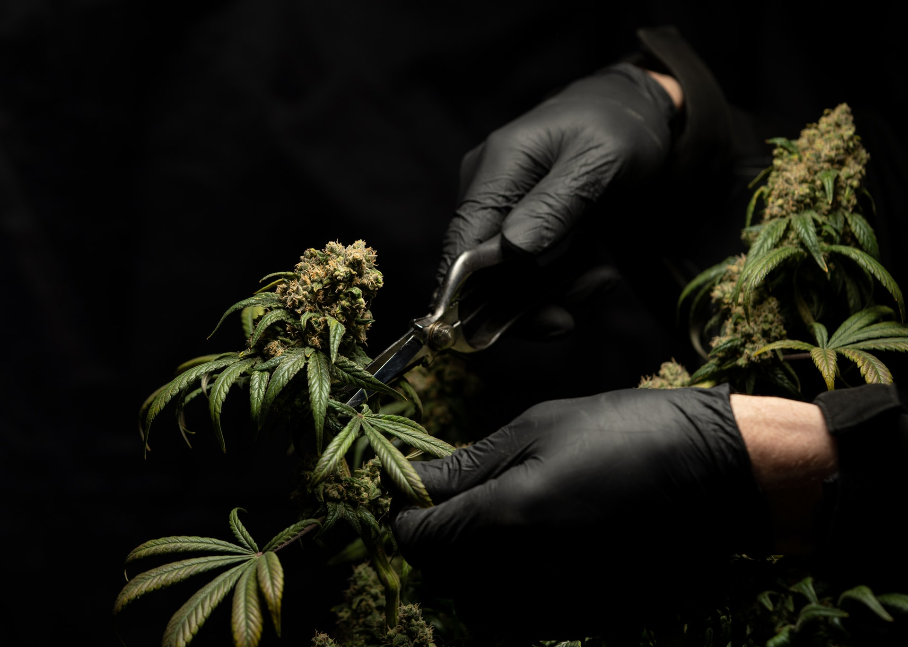

¿Cuál es la clave del éxito en un cultivo interior? Para conseguir los mejores resultados debemos tener en cuenta una serie de factores relacionados entre sí, los cuales están también relacionados directamente con el cultivo de Marihuana. Optimizar sólo uno, dos o una serie de parámetros, dejando el resto sin optimizar… es desperdiciar nuestro tiempo.
Elegir correctamente qué tipo de planta de marihuana queremos para nuestro cultivo es fundamental. Ya que si realizamos esta elección de forma errónea podemos arrepentirnos y mucho. Podes elegir entre variedades indicas, sativas o hibridas; podes encontrar informaccion sobre estas mismas en nuestra seccion Cannabis.
Este parámetro es de los más curiosos, pues muchos cultivadores piensan que cuanta más potencia lumínica (luz) pongamos, mejores resultados vamos a obtener… algo completamente falso. Las plantas de Marihuana, al igual que el resto de plantas del planeta, son capaces de asimilar cierto número de fotones de forma simultánea, por lo que si ponemos una iluminación excesiva, en realidad lo que estamos haciendo es saturar a nuestras plantas. Sabremos que esto ocurre, porque como en la propia naturaleza, las ramas comenzarán a girar unos grados sus hojas para dejar pasar la luz en vez de captarla. Por este motivo tan malo es pasarse, como quedarse corto. El cálculo de la potencia lumínica que debemos poner varía en función del espacio de cultivo y del tipo de iluminación con la que queramos trabajar. Para optimizar dicho espacio debemos tomar como referencia que una iluminación óptima para un metro cuadrado es de 600w, si utilizamos una lámpara de vapor de sodio a alta presión (HPS) o de halogenuros metálicos (HM). Para los equipos de de CHM o LED la potencia para esa superficie oscila entre los 300w y 400w. En la etapa de vegetacion deberas tener tu iluminacion programada con un timer en 18 hs prendida y 6 hs apagada.
Generacional clásica: Para llevar acabo este método, simplemente utilizamos una maceta y sustrato. Esta va a resultar la forma optima de germinar, ya que la semilla se encuentra en su hábitat natural.
Pasos a seguir: dentro de una maceta de medio litro colocaremos sustrato y lo regaremos. Colocamos la semilla en el suelo húmedo, la enterramos entre 2 y 4cm, y luego la cubrimos. Una vez que brotan los cotiledones (las primeras dos hojas), la trasladamos a una maceta de 5L para la primera etapa de vegetativo o en el caso de automáticas a su maceta definitiva.
Ovni: para germinar una semilla de esta manera, necesitamos dos platos y servilletas. Colocamos servilletas de papel de cocina dobladas en cuatro, humedecemos la servilleta, agregamos las semillas y tapamos con el doblez de la servilleta húmeda. Cubrimos con el otro plato y dejamos reposar en una alacena hasta que vemos que brotan las semillas.
Este es el momento más esperado por todo cultivador, ya que es cuando empieza la tarea fina y vemos por fin los frutos de nuestro trabajo. El punto de corte lo elegimos nosotros. Esto traerá diferencias en el pegue, que puede ser más elevado y activo o psi-coactivo y corporal. Los tricomas, esos pelitos blancos que vemos en las flores -también llamados resina- nos indican el punto de corte deseado. Para trabajar el punto de corte, es muy útil observarlos con una lupa mayor a 30x, idealmente de 60x. En la imagen de referencia podremos ver como se oxidan los tricomas. En cada punto se conseguirá un efecto diferente, si los tricomas están transparentes no estas para cosechar , pero falta poco hacerlo. A partir de que los tricomas ya estén blancos y comenzando a tornarse ámbar podremos comenzar a cosechar, en este punto el efecto que tendrán las flores será mas activo y cerebral. Cuando los tricomas estén 50% ámbar y 50% blancos es el punto de corte ideal donde obtendrás un efecto equilibrado entre cerebral y corporal. Si dejamos que maduren mas los tricomas hasta el punto que estén 90% ámbar conseguiremos que los cogollos tengan un efecto totalmente psicoactivo y corporal. Es importante que el sustrato este seco pero sin que la planta se deshidrate, para evitar la concentración de agua en el cogollo. La idea es eliminar lenta y gradualmente la humedad de la planta. Es importante proveer de circulación de aire fresco y una temperatura de 21° en la sala de cultivo para asegurar no dañar los aceites de la planta. El tiempo de secado varia entre los 4 y 15 días dependiendo de las condiciones ambientales, seco almacenar en frascos; es recomendable abrirlos una vez al dia para eliminar el exceso de humedad y así prevenir la formación de hongos.
Le llamamos curado a la etapa final del proceso de cultivo, cuando las flores son trasladadas a su recipiente final. Estos pueden ser: frascos de vidrio, de plástico o bolsas con cierre. Es importante abrir periódicamente los recipientes durante algunos minutos para que las flores respiren y renueven el aire. A medida que pasen los días, notaremos que las flores empiezan a tomar otro sabor, que los sabores se asientan y son más intensos, y entonces es cuando podemos elegir el punto que prefiramos de acuerdo a nuestro gusto.
Debemos dividir la configuración de estos parámetros en dos ciclos. El primero es el ciclo de crecimiento, en el cual la humedad óptima debe rondar entre el 60/80% constantemente. Durante el segundo ciclo (etapa de floración) debemos rebajar ese nivel de humedad dejándolo en torno al 50%. De esta forma evitaremos un exceso de humedad en las flores que después formarán cogollos, evitando así la aparición de hongos. La temperatura en el interior de nuestro armario o sala de cultivo es tan importante como cualquiera de los demás factores. Por ello debemos mantener una temperatura media constante, tanto durante la etapa de crecimiento como durante la etapa de floración. La temperatura óptima para que nuestras plantas no pierdan energía hidratándose a causa del calor y puedan desarrollarse correctamente, es de entre 20°C y 25°C. Uno de los factores clave para controlar el nivel de humedad y temperatura de nuestro indoor es controlar mediante potenciadores la intraccion y extraccion de aire. Una buena intraccion y extraccion es fundamental en nuestro cultivo de interior. Con ella no sólo renovaremos el aire viciado, sino que podremos optimizar parámetros tan importantes como lo son la temperatura y la humedad.
Lo principal en este punto, es elegir un buen sustrato para nuestro cultivo de Marihuana. En este sentido tenemos dos opciones. O bien realizamos nuestro propio sustrato a base de turbas de calidad, humus de lombriz, guano de murciélago, perlita y bacterias. O lo adquirimos directamente en nuestro growshop de confianza a partir de un módico precio y sin esfuerzo. Las dos opciones son totalmente válidas. Lo más recomendable es ir aplicando productos de forma progresiva y con las dosis mínimas recomendadas por el fabricante, a partir del mismo momento en el que veamos que la planta lo empieza a demandar mostrando cierta claridad en sus hojas. En este sentido recomendamos trabajar con productos orgánicos, los cuales son menos agresivos y nos ayudan a conseguir cosechas de una excelente composición organoléptica. Durante el periodo crítico de floración en el cual las plantas entran en la fase de engorde. Es necesaria la aplicación de abonos de origen orgánico con un alto porcentaje en fósforo y potasio (P-K). Con él se consigue un aumento significativo en la producción de flores, en el peso final y en la calidad de su composición organoléptica. Por lo tanto con sólo un abono orgánico normal de crecimiento que aplicaremos y un abono orgánico rico en fósforo y potasio (PK) que aplicaremos a mediados del ciclo de floración podremos obtener unos resultados espectaculares.